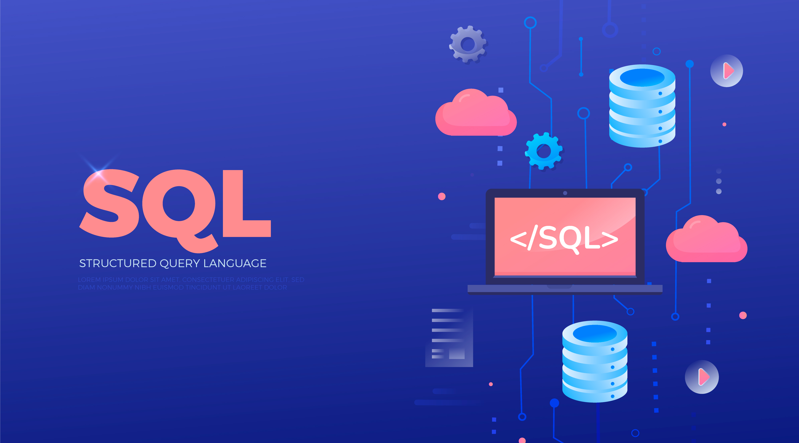
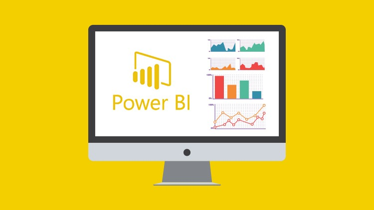
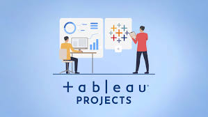
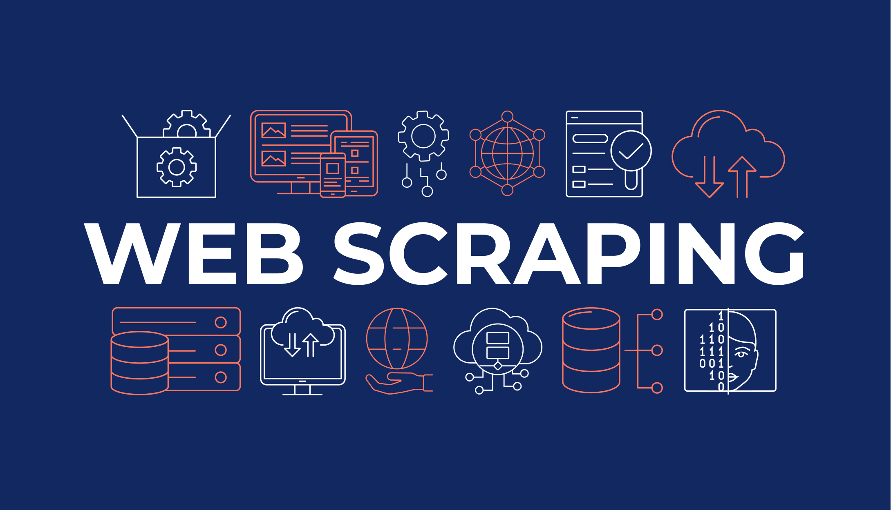

Embark on a journey through my SQL projects, each meticulously crafted through hours of diligence and extensive research. From unraveling complex data structures to optimizing query performance, every project reflects a commitment to excellence in database management
These endeavors not only showcase my technical proficiency but also the dedication poured into extracting meaningful insights from datasets. Explore the culmination of hard work, research, and a passion for transforming raw data into impactful decisions.


Created a dynamic Excel workbook for comprehensive data analysis and visualization. Utilized advanced formulas, pivot tables, and charts to deliver actionable insights. The workbook streamlined processes, improving efficiency and decision-making.

Dive into a collection of Python projects where I've harnessed the power of data available online. From meticulous cleaning to in-depth analysis, each project tells a unique data story. Leveraging visualization tools, I've crafted interactive dashboards that transform raw data into actionable insights. Explore the world of data-driven decision-making through these hands-on Python endeavors.

Developed an interactive Power BI dashboard for in-depth analysis of data. Integrated multiple data sources, providing a consolidated view for strategic decision-making. The dashboard enhances data-driven insights and fosters informed business strategies..

Designed and published impactful Tableau visualizations to convey complex data patterns. Applied advanced features like data blending and calculations for deeper insights. The visualizations contributed to improved understanding and decision-making in a specific domain.

Implemented a Python-based web scraping solution for automated data extraction from different types of websites. The tool significantly reduced manual effort and provided timely and accurate data for strategic decision-making in related domain
.
Conducted a comprehensive data cleaning project using Python and other tools to ensure data integrity. Addressed missing values, outliers, and inconsistencies, resulting in a clean and reliable dataset. The data-cleaning process enhances the accuracy and reliability of analytical model..